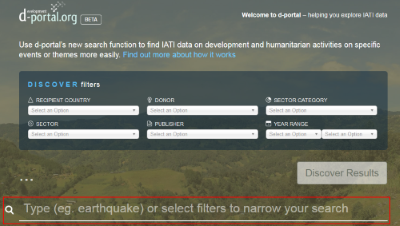

Opening this thread to see if anyone has feedback or suggestions on the search function in d-portal, and particularly if you have thoughts on any/all of the following…
(for clarity - the freetext box is the area in red here!)

-
When typing in the freetext box, is it useful having the white dropdown options which give suggestions based on what you type?
-
When pressing enter on a freetext search - would it be useful to see more info like ‘Found xxx publishers, xxx active projects, xxx sectors’ (and to then filter for ‘Active projects’ for example?)
-
(when pressing enter on a freetext search) Do you prefer to stay on the same page and see the number of search results so you can then filter further, or just go straight to results page?
-
Would it be useful to be able to pick more than one option from each of the dropdown filters (eg multiple recipient countries, sectors etc)?
Please do reply with any thoughts/comments/suggestions on the search function, either on the specific questions above or just generally!
Thanks
Matt
 always lots of ideas
always lots of ideas